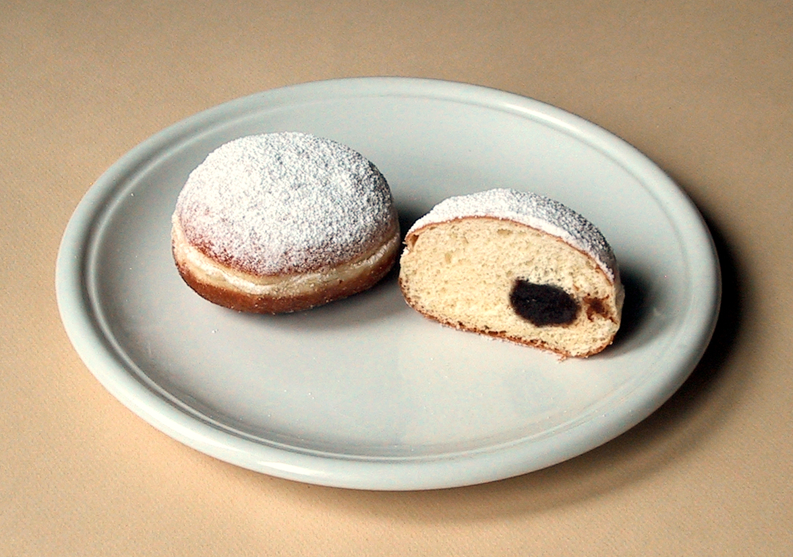

Berliner
A berliner is a type of donut they eat in Germany (seen above). Where is our newyorker?
Man! I love donuts. I bet you are also a fan of donuts. Lots of people like donuts.
In fact, let’s all go eat donuts instead of writing or reading this blog.
Unfortunately, there are more important things in this world than donuts. Things like my AP Lit grade. Which will be going down if there I don’t have a blog for this week. Let’s split the difference and talk about donuts.
Donuts are not named because they look like nuts (construction) made out of dough, as I was thinking for the majority of my life. Donuts are named the way they are because they look like nuts (like peanuts or walnuts) made out of dough. Do you see the resemblance? I don’t. Some accounts say that doughnuts are named so because they had nuts at the center of them, which, as an explanation, is easier for me to swallow (i think doughnuts with nut inclusions would be harder to swallow).
This is because donuts were originally more like what we know as doughnut holes today. Small gobs of batter were fried to a donut-like consistency (what were you expecting?) and so were sold to working people everywhere. These were not donuts like we know them today (in case the shape did not alert you). They were known as olykoeks, which is Dutch for, you guessed it, oily cakes.
In 1920, an immigrant from Russia by the name of Adolph Levitt decided to sell donuts out of his bakery. However, demand outpaced supply, and soon he was at risk of property destruction and bodily harm from a donut-starved mob (this part is probably not true, but there is only so much actual excitement in food history). He created a donut machine, which was so fascinating that many people came to watch the machine churn out donuts which they would then buy (I think the modern-day analog for this would be going to a candy factory).
Levitt was making a lot of money by selling donuts, which other people noticed. Donuts began to spread across the country. The rest is history. Today, you can see a Dunkin Donuts every 5 minutes or so (citation needed) if you are driving along any major road. Donuts are a big part of American life and culture. But why?
Let’s take a look at the implications of the donut. You could say that a single donut contains the entire universe. The hole represents nothingness, and the ring represents everythingness. Yin and yang. How do you define the donut? Is the hole the absence of donut, or is the ring the absence of absence? If you add the donut hole, which is separated from the donut before frying, rather than after, much to the surprise of more than a few people, the equation becomes too complicated to understand. O God, I could be bounded in a donut and count myself the king of infinite space.
Donuts, as an experience and a form, are universal. They are eaten by the every day blue collar working man, and the white collar elites sitting high in their skyscrapers.You can buy them 1$ a dozen (maybe not? someone test this out) if you are ok with low quality offerings a la Entenmann, or you can buy them 40$ a dozen (like I did) if you are seeking a more elevated experience (see Bombobar in Chicago). You can find donuts all over the world: bombolini, pączki, beignets, berliners, jalebi, sufganiyot, koeksister, bánh rán --- the list goes on and on and on. Anything, really, can be made or argued as a donut. Is a Bundt cake a donut? Is a roundabout a donut? Is a bike wheel a donut? Is Apple Park a donut? It’s entirely up to you to decide.
All this talk of donuts makes me hungry. Too hungry to keep writing. Send donuts to view the rest of this blog.
------------------------------------